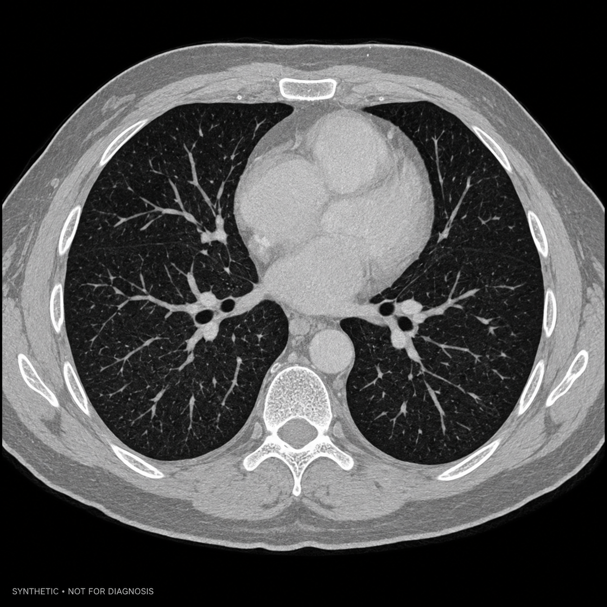
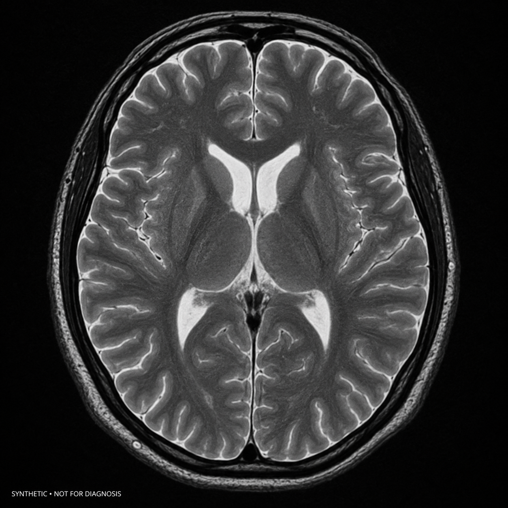
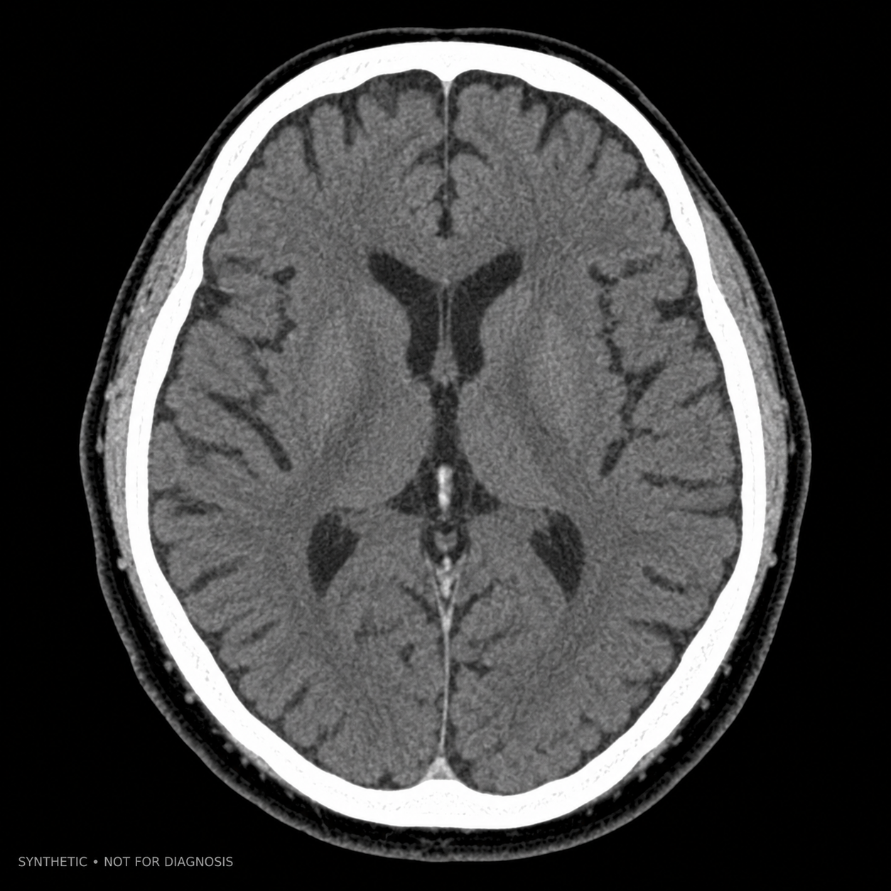

확인할 요청
2
가장 빠른 만료 · 42분 후
오늘 확인할 요청과 의료영상 상태를 한곳에서 보여드려요.
B병원 영상의학과 · 흉부 CT 1건 · VIEW 권한
B병원 Test PACS · 중복 전송 없이 상태를 확인합니다
뇌 MRI · 오프라인 열람 기한 3일 남음
건강검진, 일반 혈액검사와 항체검사를 합성 데이터로 확인합니다

CT
MRI
CT원본 메타데이터를 바꾸지 않고 쉬운 말로 정리했습니다.
영상·검사·동의 이력을 날짜순으로 찾고 방문 준비에 모읍니다.
합성 의료영상 · A병원 Test PACS · Cloud/Vault 열람
Mock Provider · 최신성: 합성 Fixture v1.1
Mock Provider · 실제 병원 API 미연결
VIEW만 허용 · 서버 감사 Projection
환자 수동 입력 · 병원 확정 예약 아님
건강정보 고속도로와 대학병원 연계 후의 사용자 경험을 합성 데이터로 미리 보여드립니다.
2026. 8. 14 · TEST 대학병원 · Mock Provider
2026. 8. 14 · TEST 대학병원 · Observation 참고 형태
2026. 8. 14 · TEST 대학병원 · 항체검사 합성 예시
2026. 9. 18 · 검사결과와 별개의 의료영상 기록
단위: mg/dL · 수치는 UI 시연용이며 정상·이상 또는 질환을 판단하지 않습니다.
방문 병원의 QR 요청을 확인하고 필요한 영상만 안전하게 전달합니다.
병원 접수 화면의 MediQ QR을 사각형 안에 맞춰주세요.
누가, 언제, 어떤 목적으로 의료영상에 접근했는지 확인합니다.
| 일시 | 행위 | 기관·주체 | 대상 | 결과 | 상세 |
|---|---|---|---|---|---|
| 오늘 14:38 | 동의 승인 | 본인 | 흉부 CT · VIEW | 승인됨 | |
| 오늘 14:35 | 열람 요청 | B병원 영상의학과 | 흉부 CT | 대기 | |
| 9. 24 11:02 | Cloud Viewer | A병원 담당의 | 뇌 MRI | 완료 | |
| 9. 18 16:44 | Mobile Export | 본인 | 흉부 CT | 완료 |
민감한 내용은 잠금화면에 표시하지 않고 앱 안에서 확인합니다.
앱에서 요청 기관과 영상 범위를 확인해주세요.
4분 전 · 동의 요청전송 결과를 확인하고 있습니다. 중복 요청하지 마세요.
18분 전 · 전송 상태앱 안에서 만료 예정 항목을 확인할 수 있습니다.
어제 · 보관 기한기기에 암호화해 보관한 영상의 크기와 열람 기한을 관리합니다.
기술 용어 대신 현재 영향과 안전한 다음 행동을 알려드립니다.
병원 서버가 응답하기 전에 연결이 종료되었습니다. 영상이 이미 전달되었을 수 있어 다시 보내지 않습니다.
열람 허용 시간이 끝났거나 승인 범위가 변경되었습니다. 영상 원본이 삭제되었다는 뜻은 아닙니다.
환자가 이해할 수 있는 한 문장으로 현재 상태를 설명합니다.
열람·저장·전송 중 영향을 받는 행동만 명확히 표시합니다.
멱등성이 확인된 재시도 또는 안전한 대체 행동만 제공합니다.
영상과 관련 문서를 출처·버전·무결성과 함께 확인하는 미래 기능입니다.
FINAL · A병원 영상의학과 · 2026. 9. 18
FINAL · A병원 호흡기내과 · 2026. 9. 19
독립된 신원과 제한된 범위로 다른 사람의 도움을 받는 미래 기능입니다.
VIEW만 허용 · 뇌 MRI 1건 · 2026. 9. 30 만료
외부 권한 검증 절차가 승인되기 전에는 사용할 수 없습니다.